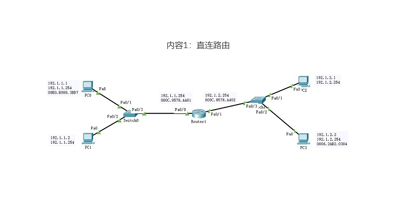
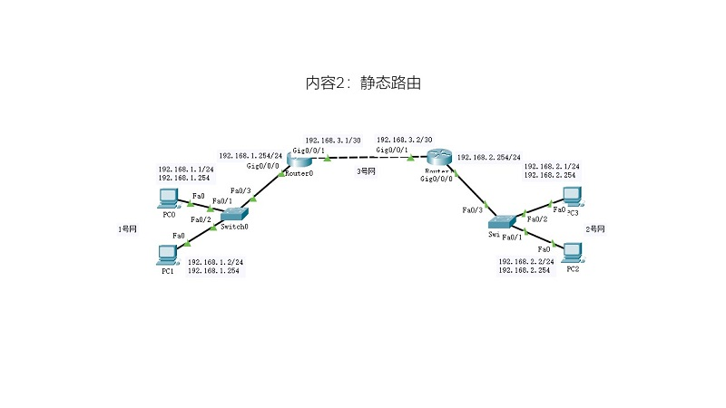
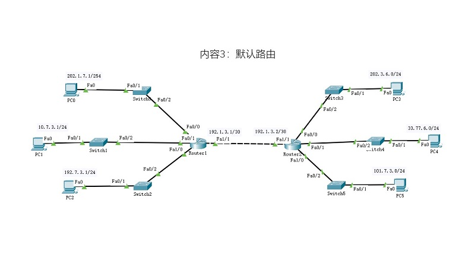

路由器和路由


- 实操部分
- 一、实验目的
- 1. 了解路由的基本类型；
- 2. 掌握直连路由的配置；
- 3. 掌握静态路由的配置；
- 4. 掌握默认路由的配置；
- 5. 进一步熟悉PT的使用；
- 二、实验要求
- 根据给定的网络拓扑图，分别完成：
- 1. 网络拓扑的搭建；
- 2. IP地址的配置；
- 3. 路由器的端口配置和相应的路由配置；
- 4. 测试网络的连通性；
- 要求
- 1. 每个实验内容需要的设备名称和数量，包括扩展使用的模块；
- 2. 网络拓扑布局合理、标注信息清晰完整；
- 3. 关键配置有源码或截图；
- 4. 测试结果有截图；
- 三、实验过程与结果
- 实验内容1：直连路由
- 
- 实验内容2：静态路由
- 
- 实验内容3：默认路由
- 
- 四、实验分析
- 每个实验阶段的分析和异常处理。
- 五、心得体会
- 实验操作的感悟；不少于200字。
- 实验报告
- 1. 根据实操部分的内容，完成项目；
- 2. 以纸质的形式提交实验报告；
- 3. 论文格式请参照范文[点击下载]。